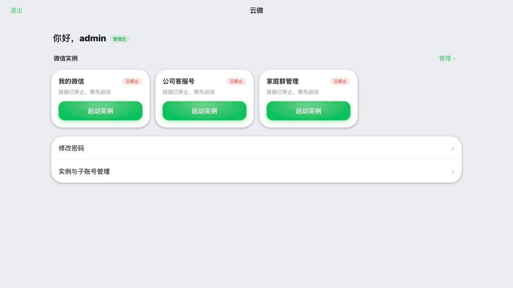
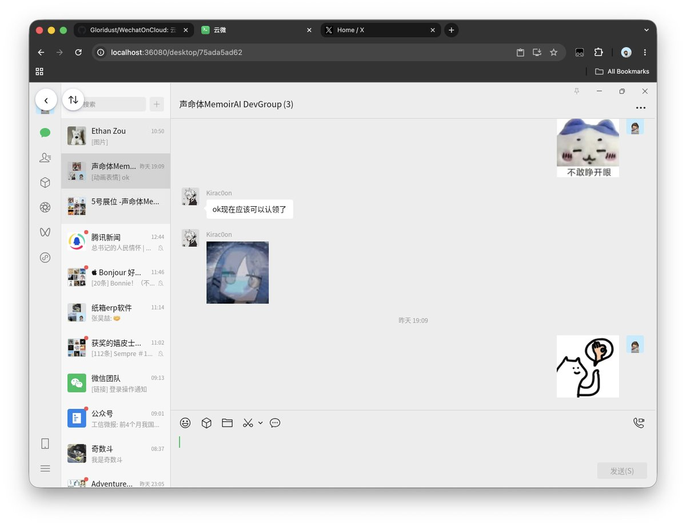
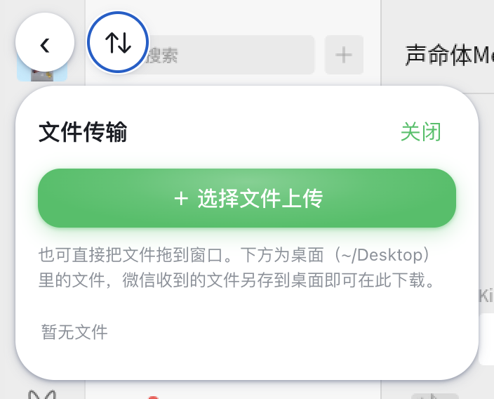

奶昔🥤
@realNyarime
@gloridust1024 @manateelazycat 如果你受到了启发，代码全部都是自己写的，那算什么抄袭？他那个蓝猫微服一个N100配一张垃圾N卡，卖你6000 8000的，怎么不说他天天去抄别人的，然后搞自己的这种小心思呢？
而且他们没有自己的硬件团队，这王勇整天给我发私信，让我去加他小助手微信什么领什么优惠券，后面我给他挂了，就喜提野爹证了



Ethan Zou
@gloridust1024
受@manateelazycat 老师启发，借鉴了创意，做了个 ToB 的开源云微，可自部署到飞牛 NAS 或其他服务器，让暂时买不起懒猫微服的朋友可以用上这个功能😋
- 微信云多开，可分配给多个子用户
- 官方原生 Linux 微信环境，不封号
- 音视频、文件传输全部打通
已开源，望共创：https://t.co/UchEMzgnYp https://t.co/dVr3FFNUG3